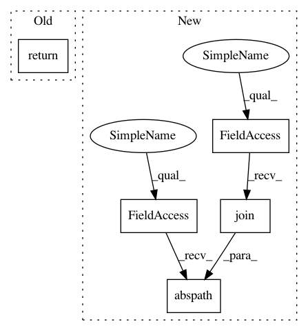

96574b47a58b0f3dc4a5b085086ca07a173d432b,scripts/2015_nips_paper/score_metalearning.py,,main,#Any#Any#Any#Any#Any#,13
Before Change
automl = AutoSklearnClassifier(**automl_arguments)
print(automl._automl._metadata_directory)
print("////////")
return
automl.fit(X_train, y_train,
dataset_name=str(task_id),
X_test=X_test, y_test=y_test,
After Change
"multiclass": "multiclass.classification",
}
task_type = type_of_target(y_train)
metadata_for_this_task = os.path.abspath(
os.path.join(working_directory,
"metadata_%i/balanced_accuracy_%s_sparse" % (task_id, TASK_TYPES_TO_STRING[task_type])))
// how to check if data is sparse before running?
configuration_output_dir = os.path.join(working_directory, str(seed))
tmp_dir = os.path.join(configuration_output_dir, str(task_id))
In pattern: SUPERPATTERN
Frequency: 3
Non-data size: 5
Instances
Project Name: automl/auto-sklearn
Commit Name: 96574b47a58b0f3dc4a5b085086ca07a173d432b
Time: 2019-03-13
Author: ahn1340@hotmail.com
File Name: scripts/2015_nips_paper/score_metalearning.py
Class Name:
Method Name: main
Project Name: facebookresearch/Detectron
Commit Name: aee97b14f7b18ed505393642083cfb24b54c9a8b
Time: 2018-01-29
Author: ilijar@fb.com
File Name: lib/core/test_retinanet.py
Class Name:
Method Name: multi_gpu_test_retinanet_on_dataset
Project Name: automl/auto-sklearn
Commit Name: 3c10c9c57100291107db39e7c830de8f3b7f1334
Time: 2019-02-07
Author: ahn1340@hotmail.com
File Name: scripts/2015_nips_paper/score_metalearning.py
Class Name:
Method Name: main